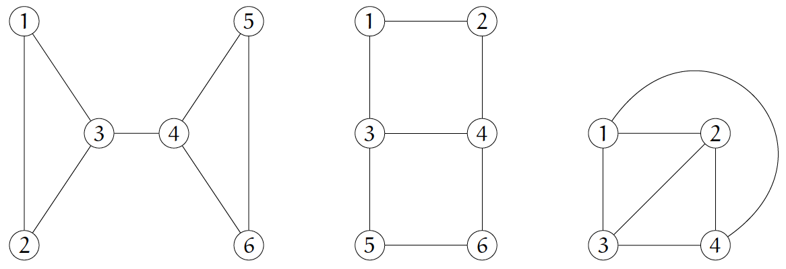
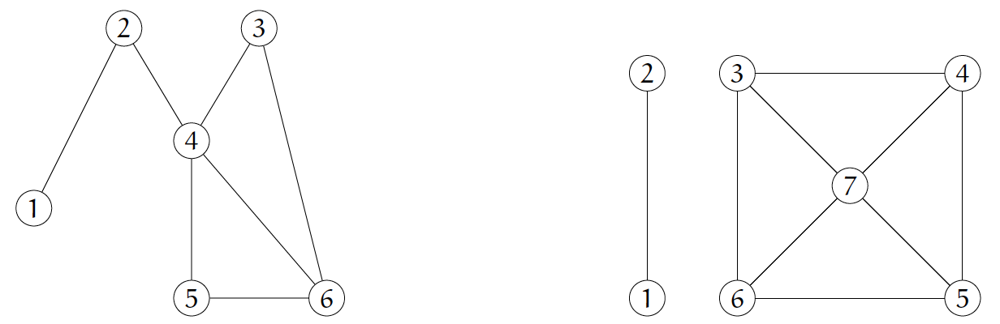
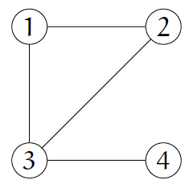
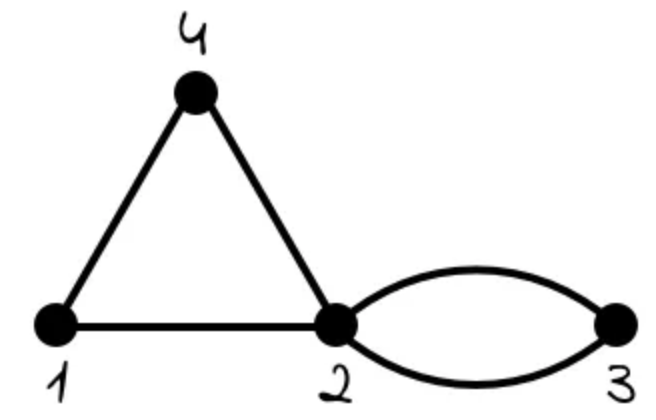

Tutorial problems
The following exercises should be attempted before and/or during your next two tutorial sessions.
Problem 1
Find the asymptotic complexity of the following functions. Specifically, find a function $g(n)$ so that each of the following functions is $O(g(n))$.
- (a) $(6n+1)(4+\log n)$
- (b) $\dfrac{(n+1)(n+3)}{n+2}$
View Solution
Solution & Explanation
(a) The function expands to $(6n+1)(4+\log n) = 24n + 6n\log n + 4 + \log n$. When analyzing asymptotic complexity, we look for the fastest-growing term. Comparing the terms:
- $6n\log n$ grows faster than $24n$.
- $24n$ grows faster than $\log n$.
- $\log n$ grows faster than $4$.
The dominant, fastest-growing term is $6n\log n$. Therefore, the function is $O(n\log n)$.
(b) The numerator is $(n+1)(n+3) = n^2 + 4n + 3$. As $n \to \infty$, the dominant term is $n^2$, so the numerator is $O(n^2)$.
The denominator is $n+2$. As $n \to \infty$, the dominant term is $n$, so the denominator is $O(n)$.
The complexity of the fraction is the complexity of the numerator divided by the complexity of the denominator: $\dfrac{O(n^2)}{O(n)} = O(n)$.
Therefore, the function is $O(n)$.
Problem 2
For each of the following, find the asymptotic complexity of the algorithm, i.e., a function $g(n)$ for which the command $x = x+1$ gets executed $O(g(n))$ times:
-
(a)
i = 1 x = 0 while i <= 2n: x = x + 1 i = i + 2 return x -
(b)
x = 0 for i from 1 to n: for j from 1 to n: for k from 1 to n: x = x + 1 return x -
(c)
x = 0 i = 2 while i <= n: x = x + 1 i = i^2 return x
View Solution
Solution & Explanation
(a) The while loop starts with $i=1$ and stops when $i > 2n$. In each iteration, $i$ increases by 2. The values of $i$ will be $1, 3, 5, \dots$. Let $k$ be the number of iterations. After $k$ iterations, $i = 1 + (k-1) \times 2$.
We want to find $k$ when $1 + (k-1) \times 2 \approx 2n$.
$2k - 2 + 1 \approx 2n \implies 2k - 1 \approx 2n \implies 2k \approx 2n+1 \implies k \approx n$.
The command $x=x+1$ is executed exactly once per iteration, so it is executed $n$ times. The algorithm is $O(n)$.
(b) This algorithm has three nested loops. The outer loop runs $n$ times (for $i$). For each of those iterations, the middle loop runs $n$ times (for $j$). For each of *those* iterations, the inner loop runs $n$ times (for $k$).
The total number of executions of $x=x+1$ is $n \times n \times n = n^3$. So the algorithm is $O(n^3)$.
(c) The value of $i$ follows the sequence $2, 2^2, (2^2)^2, ((2^2)^2)^2, \dots$ which is $2^1, 2^2, 2^4, 2^8, \dots, 2^{2^k}$.
The loop terminates after $k$ steps when $i_k > n$. So we need to find $k$ such that $2^{2^k} > n$.
Take $\log_2$ of both sides: $2^k > \log_2 n$.
Take $\log_2$ again: $k > \log_2(\log_2 n)$.
The number of iterations $k$ is proportional to $\log(\log n)$. So the algorithm is $O(\log\log n)$.
Problem 3
For each of the following graphs:
- Find the degree of edge-connectivity ($\lambda(G)$) and a minimal cutset.
- Is the graph Eulerian? (Contains an Eulerian circuit)
- Is the graph Hamiltonian? (Contains a Hamiltonian cycle)

View Solution
Solution & Explanation
Graph 1 (Left):- Edge-connectivity $\lambda(G) = 1$. The edge $(3,4)$ is a bridge. Removing it disconnects the graph. Minimal cutset: $\{(3,4)\}$.
- Not Eulerian. An Eulerian circuit exists if and only if every vertex has an even degree. Vertices 3 and 4 have degree 3 (odd).
- Not Hamiltonian. A Hamiltonian cycle must visit every vertex exactly once. To visit vertices 1 and 2, any path must enter and leave the set $\{1, 2, 3\}$ via vertex 3. Similarly for $\{4, 5, 6\}$ via vertex 4. To visit all 6 vertices, any path must pass through the edge $(3,4)$. A cycle would need to cross it *twice* (e.g., $1-3-4-5-6-4-3-2-1$), which is not allowed.
- Edge-connectivity $\lambda(G) = 2$. Removing any single edge does not disconnect the graph. However, removing the edges $(1,3)$ and $(2,4)$ disconnects the graph into two components $\{1, 2\}$ and $\{3, 4, 5, 6\}$. Minimal cutset: $\{(1,3), (2,4)\}$.
- Not Eulerian. Vertices 1, 2, 5, 6 all have degree 2 (even), but vertices 3 and 4 have degree 3 (odd).
- Hamiltonian. A Hamiltonian cycle exists. For example: $1-2-4-6-5-3-1$. This cycle visits every vertex exactly once.
- Edge-connectivity $\lambda(G) = 3$. This graph is $K_4$, the complete graph on 4 vertices. The minimum degree $\delta(G) = 3$. A theorem states $\lambda(G) \le \delta(G)$, so $\lambda(G) \le 3$. Removing any two edges (e.g., $(1,2)$ and $(1,3)$) leaves the graph connected. You must remove all 3 edges from a single vertex (e.g., $\{(1,2), (1,3), (1,4)\}$) to disconnect it. Minimal cutset: $\{(1,2), (1,3), (1,4)\}$.
- Not Eulerian. All 4 vertices have degree 3 (odd).
- Hamiltonian. A Hamiltonian cycle exists. For example: $1-2-3-4-1$.
Problem 4
For each problem, try to give two different simple undirected graphs with the given properties, or explain why doing so is impossible.
- (a) Two different trees with 4 vertices. (Note: all trees with $n$ vertices have $n-1$ edges).
- (b) Two different connected graphs of 8 vertices all of degree 2.
- (c) Two different graphs of 5 vertices all of degree 4.
- (d) Two different graphs of 5 vertices all of degree 3.
View Solution
Solution & Explanation
(a) Possible. A "tree" is a connected graph with no cycles.
Graph 1: A straight path $P_4$: $v_1 - v_2 - v_3 - v_4$. (Degrees: 1, 2, 2, 1)
Graph 2: A "star" graph $K_{1,3}$: $v_1$ connected to $v_2$, $v_3$, and $v_4$. (Degrees: 3, 1, 1, 1)
Both are trees with 4 vertices and 3 edges.
(b) Impossible. A connected graph where every vertex has degree 2 must be a cycle. The only connected graph with 8 vertices all of degree 2 is the cycle graph $C_8$. Any other arrangement (like two $C_4$ graphs) would be disconnected. Since there is only one such graph (up to isomorphism), it's impossible to find two different ones.
(c) Impossible. A simple graph with $n$ vertices where every vertex has degree $n-1$ is the complete graph $K_n$. Here we have 5 vertices all of degree $5-1=4$. The only graph with this property is $K_5$. It's impossible to find two different graphs.
(d) Impossible. This follows from the Handshaking Lemma, which states that the sum of degrees of all vertices in a graph must be an even number (since it equals $2 \times |E|$).
Here, we have 5 vertices, each with degree 3.
Sum of degrees = $3 + 3 + 3 + 3 + 3 = 15$.
Since 15 is an odd number, no such graph can exist.
Problem 5
- (a) Give the adjacency matrix for the following two graphs. Use the adjacency matrix connectivity algorithm to show the first is connected and the second is not.

- (b) Consider the following two adjacency matrices. Use the connectivity algorithm to determine which are connected. $$ A_1 = \begin{pmatrix} 0 & 1 & 0 & 0 & 0 \\ 1 & 0 & 1 & 0 & 0 \\ 0 & 1 & 0 & 0 & 0 \\ 0 & 0 & 0 & 0 & 1 \\ 0 & 0 & 0 & 1 & 0 \end{pmatrix} \quad A_2 = \begin{pmatrix} 0 & 1 & 1 & 1 & 1 \\ 1 & 0 & 1 & 1 & 1 \\ 1 & 1 & 0 & 1 & 1 \\ 1 & 1 & 1 & 0 & 1 \\ 1 & 1 & 1 & 1 & 0 \end{pmatrix} $$
View Solution
Solution & Explanation
(a) Graph 1 (Left) - Adjacency Matrix:
$$ A_L = \begin{pmatrix} % 1 2 3 4 5 6 0 & 1 & 0 & 0 & 0 & 0 \\ 1 & 0 & 0 & 1 & 0 & 0 \\ 0 & 0 & 0 & 1 & 0 & 1 \\ 0 & 1 & 1 & 0 & 1 & 1 \\ 0 & 0 & 0 & 1 & 0 & 1 \\ 0 & 0 & 1 & 1 & 1 & 0 \end{pmatrix} $$ Connectivity Algorithm:- Start with $C = \{1\}$.
- Row 1: Has '1' in col 2. New vertex: 2. $C = \{1, 2\}$.
- Row 2: Has '1' in col 1 (in C), col 4. New vertex: 4. $C = \{1, 2, 4\}$.
- Row 4: Has '1' in cols 2 (in C), 3, 5, 6. New vertices: 3, 5, 6. $C = \{1, 2, 4, 3, 5, 6\}$.
Since $C$ now contains all 6 vertices, the graph is connected.
(a) Graph 2 (Right) - Adjacency Matrix:
$$ A_R = \begin{pmatrix} % 1 2 3 4 5 6 7 0 & 1 & 0 & 0 & 0 & 0 & 0 \\ 1 & 0 & 0 & 0 & 0 & 0 & 0 \\ 0 & 0 & 0 & 1 & 1 & 1 & 1 \\ 0 & 0 & 1 & 0 & 1 & 0 & 1 \\ 0 & 0 & 1 & 1 & 0 & 1 & 1 \\ 0 & 0 & 1 & 0 & 1 & 0 & 1 \\ 0 & 0 & 1 & 1 & 1 & 1 & 0 \end{pmatrix} $$ Connectivity Algorithm:- Start with $C = \{1\}$.
- Row 1: Has '1' in col 2. New vertex: 2. $C = \{1, 2\}$.
- Row 2: Has '1' in col 1 (in C). No new vertices.
The algorithm terminates. The set of reachable vertices is $C = \{1, 2\}$. Since $C$ does not contain all 7 vertices, the graph is not connected. (It has two components: $\{1, 2\}$ and $\{3, 4, 5, 6, 7\}$).
(b) Matrix $A_1$:
- Start with $C = \{1\}$.
- Row 1: Has '1' in col 2. New vertex: 2. $C = \{1, 2\}$.
- Row 2: Has '1' in col 1 (in C), col 3. New vertex: 3. $C = \{1, 2, 3\}$.
- Row 3: Has '1' in col 2 (in C). No new vertices.
Algorithm terminates. $C = \{1, 2, 3\}$. This does not include vertices 4 and 5. The graph is not connected. (It has two components: $\{1, 2, 3\}$ and $\{4, 5\}$).
(b) Matrix $A_2$:
- Start with $C = \{1\}$.
- Row 1: Has '1' in cols 2, 3, 4, 5. New vertices: 2, 3, 4, 5. $C = \{1, 2, 3, 4, 5\}$.
Since $C$ now contains all 5 vertices, the graph is connected. (This is the adjacency matrix for $K_5$, the complete graph on 5 vertices).
Additional problems
Problem 6
Find a function $g(n)$ for which the command $x=x+1$ gets executed $O(g(n))$ times.
x = 0
for i from 1 to n:
for j from 1 to i:
for k from 1 to j:
x = x + 1
return x
View Solution
Solution & Explanation
We need to find the total number of times the inner command $x=x+1$ is executed. We can express this as a triple summation:
$$ \text{Total Executions} = \sum_{i=1}^{n} \sum_{j=1}^{i} \sum_{k=1}^{j} 1 $$Let's solve this from the inside out:
Innermost sum: $\sum_{k=1}^{j} 1 = j$
Middle sum: $\sum_{j=1}^{i} j = \frac{i(i+1)}{2} = \frac{1}{2}i^2 + \frac{1}{2}i$
Outermost sum: $\sum_{i=1}^{n} \left( \frac{1}{2}i^2 + \frac{1}{2}i \right) = \frac{1}{2} \sum_{i=1}^{n} i^2 + \frac{1}{2} \sum_{i=1}^{n} i$
We use the standard formulas for sums of powers:
$$ \sum_{i=1}^{n} i = \frac{n(n+1)}{2} \sim O(n^2) $$ $$ \sum_{i=1}^{n} i^2 = \frac{n(n+1)(2n+1)}{6} \sim O(n^3) $$Substituting these in:
$$ \text{Total} = \frac{1}{2} \left( \frac{n(n+1)(2n+1)}{6} \right) + \frac{1}{2} \left( \frac{n(n+1)}{2} \right) $$ $$ = \frac{2n^3 + \dots}{12} + \frac{n^2 + \dots}{4} $$The dominant term in this polynomial is $n^3$. Therefore, the asymptotic complexity is $O(n^3)$.
Problem 7
Among a group of 7 people, is it possible for everyone to be friends with exactly 2 of the people in the group? Is it possible for everyone to be friends with exactly 3 people in the group? Draw the graphs if possible.
View Solution
Solution & Explanation
(a) Friends with 2 people: Possible.
This describes a graph with 7 vertices, where every vertex has a degree of 2 (a 2-regular graph). A connected graph where every vertex has degree 2 is a cycle.
Graph: The cycle graph $C_7$. Draw 7 vertices in a circle, and connect each vertex to its two immediate neighbors. Every vertex has exactly degree 2. It is also possible to have disconnected components, such as $C_3$ and $C_4$, which also satisfies the condition.
(b) Friends with 3 people: Impossible.
This describes a graph with 7 vertices, where every vertex has a degree of 3 (a 3-regular graph).
We use the Handshaking Lemma: The sum of the degrees of all vertices must be an even number (since $\sum \deg(v) = 2|E|$).
In this case, we have 7 vertices, each with degree 3.
Sum of degrees = $7 \times 3 = 21$.
Since 21 is an odd number, it violates the Handshaking Lemma. Therefore, no such graph can exist.
Problem 8
Consider the following graph. How many paths of length two are there between vertices 1 and 3? How many paths of length three are there between vertices 2 and 4?

View Solution
Solution & Explanation
We can solve this by listing the paths, or by using the adjacency matrix $A$. The number of paths of length $k$ from $i$ to $j$ is the entry $(i,j)$ in the matrix $A^k$.
Adjacency Matrix (A):
$$ A = \begin{pmatrix} % 1 2 3 4 0 & 1 & 1 & 0 \\ 1 & 0 & 1 & 0 \\ 1 & 1 & 0 & 1 \\ 0 & 0 & 1 & 0 \end{pmatrix} $$(a) Paths of length 2 from 1 to 3:
We are looking for $(A^2)_{1,3}$. Let's compute $A^2$:
$$ A^2 = A \times A = \begin{pmatrix} 0 & 1 & 1 & 0 \\ 1 & 0 & 1 & 0 \\ 1 & 1 & 0 & 1 \\ 0 & 0 & 1 & 0 \end{pmatrix} \begin{pmatrix} 0 & 1 & 1 & 0 \\ 1 & 0 & 1 & 0 \\ 1 & 1 & 0 & 1 \\ 0 & 0 & 1 & 0 \end{pmatrix} = \begin{pmatrix} 2 & 1 & 1 & 1 \\ 1 & 2 & 1 & 1 \\ 1 & 1 & 3 & 0 \\ 1 & 1 & 0 & 1 \end{pmatrix} $$The entry $(A^2)_{1,3}$ is 1. So there is 1 path of length two.
By listing: The only path is $1-2-3$.
(b) Paths of length 3 from 2 to 4:
We are looking for $(A^3)_{2,4}$. Let's compute $A^3$:
$$ A^3 = A \times A^2 = \begin{pmatrix} 0 & 1 & 1 & 0 \\ 1 & 0 & 1 & 0 \\ 1 & 1 & 0 & 1 \\ 0 & 0 & 1 & 0 \end{pmatrix} \begin{pmatrix} 2 & 1 & 1 & 1 \\ 1 & 2 & 1 & 1 \\ 1 & 1 & 3 & 0 \\ 1 & 1 & 0 & 1 \end{pmatrix} = \begin{pmatrix} 2 & 3 & 4 & 1 \\ 3 & 2 & 4 & 1 \\ 4 & 4 & 2 & 3 \\ 1 & 1 & 3 & 0 \end{pmatrix} $$The entry $(A^3)_{2,4}$ is 1. So there is 1 path of length three.
By listing: The only path is $2-1-3-4$.
Problem 9 (The "Good Will Hunting" problem)
Given the graph:

Find (a) the adjacency matrix of the graph, and (b) the matrix giving the number of all 3-step paths between the vertices.
View Solution
Solution & Explanation
This is a multigraph (it has multiple edges between vertices 2 and 3). When creating the adjacency matrix for a multigraph, the entry $(i,j)$ is the number of edges between $i$ and $j$.
(a) The Adjacency Matrix (A):
- $v_1$ connects to $v_2$ (1) and $v_4$ (1).
- $v_2$ connects to $v_1$ (1), $v_3$ (2 edges), and $v_4$ (1).
- $v_3$ connects to $v_2$ (2 edges).
- $v_4$ connects to $v_1$ (1) and $v_2$ (1).
(b) The matrix for all 3-step paths ($A^3$):
First, we compute $A^2 = A \times A$:
$$ A^2 = \begin{pmatrix} 0 & 1 & 0 & 1 \\ 1 & 0 & 2 & 1 \\ 0 & 2 & 0 & 0 \\ 1 & 1 & 0 & 0 \end{pmatrix} \begin{pmatrix} 0 & 1 & 0 & 1 \\ 1 & 0 & 2 & 1 \\ 0 & 2 & 0 & 0 \\ 1 & 1 & 0 & 0 \end{pmatrix} = \begin{pmatrix} 2 & 1 & 2 & 1 \\ 1 & 6 & 0 & 1 \\ 2 & 0 & 4 & 2 \\ 1 & 1 & 2 & 2 \end{pmatrix} $$Now, we compute $A^3 = A \times A^2$:
$$ A^3 = \begin{pmatrix} 0 & 1 & 0 & 1 \\ 1 & 0 & 2 & 1 \\ 0 & 2 & 0 & 0 \\ 1 & 1 & 0 & 0 \end{pmatrix} \begin{pmatrix} 2 & 1 & 2 & 1 \\ 1 & 6 & 0 & 1 \\ 2 & 0 & 4 & 2 \\ 1 & 1 & 2 & 2 \end{pmatrix} = \begin{pmatrix} (0+1+0+1) & (0+6+0+1) & (0+0+0+2) & (0+1+0+2) \\ (2+0+4+1) & (1+0+0+1) & (2+0+8+2) & (1+0+4+2) \\ (0+2+0+0) & (0+12+0+0) & (0+0+0+0) & (0+2+0+0) \\ (2+1+0+0) & (1+6+0+0) & (2+0+0+0) & (1+1+0+0) \end{pmatrix} $$The matrix giving the number of all 3-step paths is $A^3$: $$ A^3 = \begin{pmatrix} 2 & 7 & 2 & 3 \\ 7 & 2 & 12 & 7 \\ 2 & 12 & 0 & 2 \\ 3 & 7 & 2 & 2 \end{pmatrix} $$
Problem 10
Show how to calculate the adjacency matrix powers $A^2$ and $A^3$ from Problem 9 using Python. Provide a sample code snippet and its output.
View Solution
Solution & Explanation
We can efficiently perform matrix multiplication and calculate matrix powers using the NumPy library in Python. The @ operator is used for matrix multiplication.
(a) Python Code using NumPy:
This code will define the adjacency matrix $A$ from Problem 9, then calculate and print $A^2$ and $A^3$.
import numpy as np
# Set print options for better matrix display
np.set_printoptions(linewidth=100)
# 1. Define the Adjacency Matrix A from Problem 9
A = np.array([
[0, 1, 0, 1],
[1, 0, 2, 1],
[0, 2, 0, 0],
[1, 1, 0, 0]
])
print("--- Adjacency Matrix (A) ---")
print(A)
# 2. Calculate A^2 (Paths of length 2)
# We use the '@' operator for matrix multiplication
A2 = A @ A
print("\n--- A^2 (Paths of length 2) ---")
print(A2)
# 3. Calculate A^3 (Paths of length 3)
# We can do this by (A @ A @ A) or (A @ A2)
A3 = A @ A2
print("\n--- A^3 (Paths of length 3) ---")
print(A3)
(b) Output of the Code:
Running the code above will produce the following output, which exactly matches our manually calculated matrices in Problem 9.
--- Adjacency Matrix (A) --- [[0 1 0 1] [1 0 2 1] [0 2 0 0] [1 1 0 0]] --- A^2 (Paths of length 2) --- [[2 1 2 1] [1 6 0 1] [2 0 4 2] [1 1 2 2]] --- A^3 (Paths of length 3) --- [[ 2 7 2 3] [ 7 2 12 7] [ 2 12 0 2] [ 3 7 2 2]]